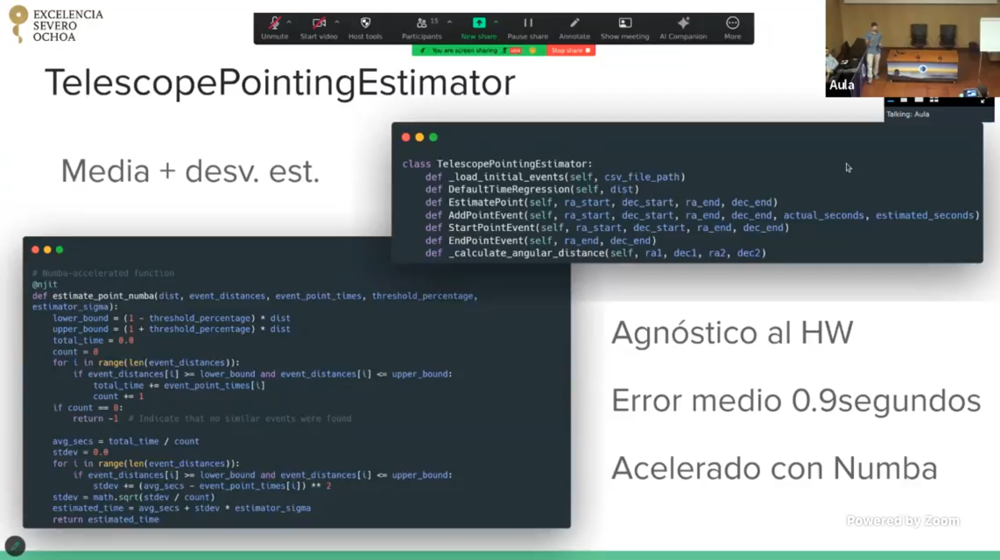
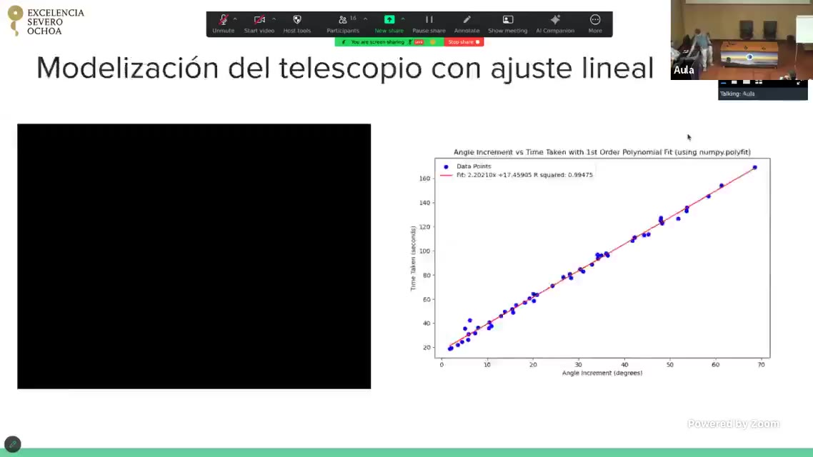
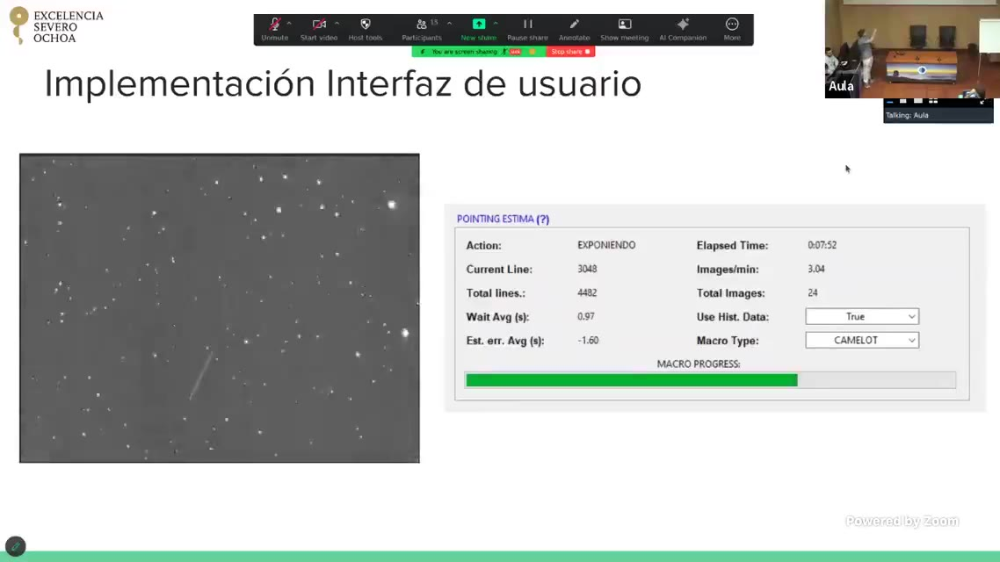
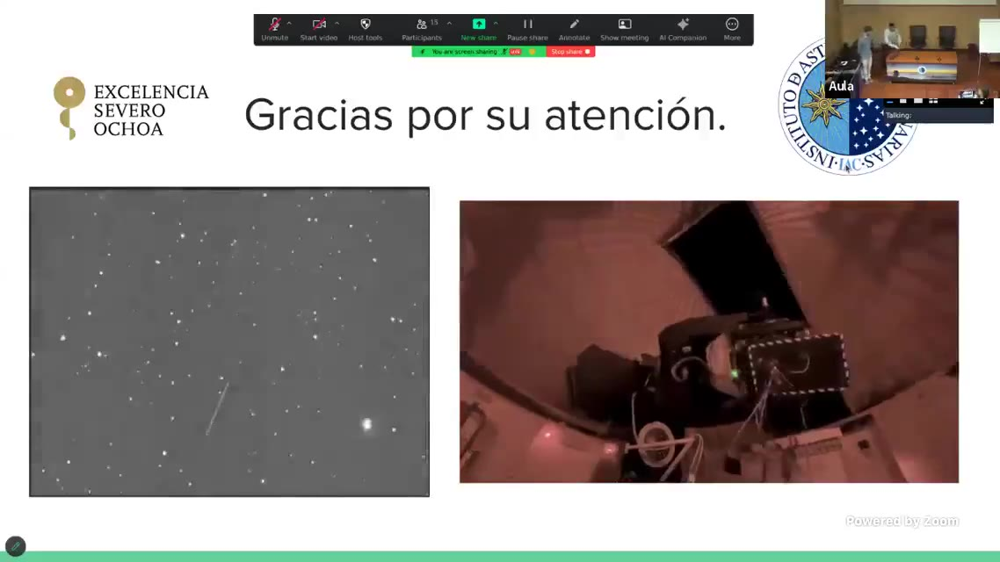

Software Engineering · Astronomy
TelescopePointingEstimator — IAC
Modernizing the night-telescope control systems at the Teide Observatory — and maximizing satellite captures per night.

Overview
During a research scholarship at the Instituto de Astrofísica de Canarias (IAC), I modernized the control systems of the night telescopes at the Teide Observatory — the IAC80 (0.82 m) and the Carlos Sánchez (TCS, 1.5 m) — replacing a control stack based on 1980s MS-DOS.
First, I rebuilt the guiding-error visualization on a ROS client/server architecture with a pyQt interface, plotting the FOBIA guiding system's RA/DEC errors in real time (time series, histogram and scope plot) so astronomers can read the telescope's state at a glance.
Second, for the Caronte satellite-observation system I developed the TelescopePointingEstimator: it predicts how long the mount takes to slew from one point to another so it arrives a fraction of a second before a satellite crosses the field of view, capturing it frame after frame all night. It combines a linear motor model (R² = 0.994) as a cold-start fallback with a mean + standard-deviation statistic over historical movements, accelerated with Numba for the thousands of evaluations per night.
Profiling also revealed — and let me fix — a 3-second serial-port read delay. The result is a hardware-agnostic estimator (any telescope modeled in ~3 clicks), a 0.9 s average wait and ~3.2 images/minute, beating the previous Camelot 2 system and roughly doubling the science gathered per unit of time.
Demo
Severo Ochoa seminar — telescope control-system improvements at the Teide Observatory
Highlights
- Replaced an 80s MS-DOS control stack with ROS + pyQt
- Real-time RA/DEC guiding-error plots: time series, histogram & scope plot
- Pointing estimator arrives a fraction of a second before each satellite pass
- Numba-accelerated statistics + linear-model fallback (R² = 0.994)
- Profiled and fixed a 3 s serial-port read delay
- Hardware-agnostic · 0.9 s avg wait · ~3.2 img/min (beats Camelot 2)
Gallery


